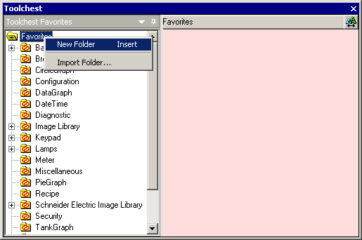
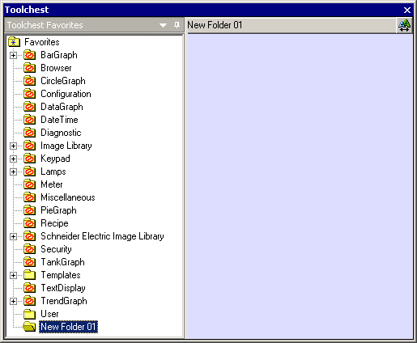
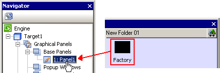
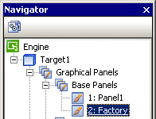

|
|
|
|
|
|
|
|
With Vijeo-Designer's Toolchest, you can reuse panels from one project to another. You can also reuse panels in the same project. For more information, see Section 21.2, Using the Toolchest to Store and Reuse Common Objects.
Click the Toolchest icon  in the menu bar to open the Toolchest window.
in the menu bar to open the Toolchest window.
Right-click and select New Folder.

When the folder is created and displayed in the Toolchest window, change the folder name as required.

From the Navigator window's Project tab, drag and drop the panel into the Toolchest window.

Open a different project, so you can reuse the panel you just dropped into the Toolchest window.
From the Toolchest window, drag and drop the panel into the other project.

The panel is now added to the Base Panels node in a different project.
